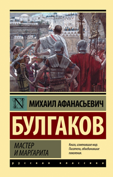

«Мастер и Маргарита» — роман Михаила Афанасьевича Булгакова, работа над которым началась в конце 1920-х годов и продолжалась вплоть до смерти писателя.
Роман сочетает в себе несколько жанров: философскую притчу, любовную историю и сатиру на советское общество. Это мистическое произведение переплетает три сюжетные линии: визит дьявола в Москву, историю Понтия Пилата и трагическую любовь Мастера и Маргариты.
© Все права защищены